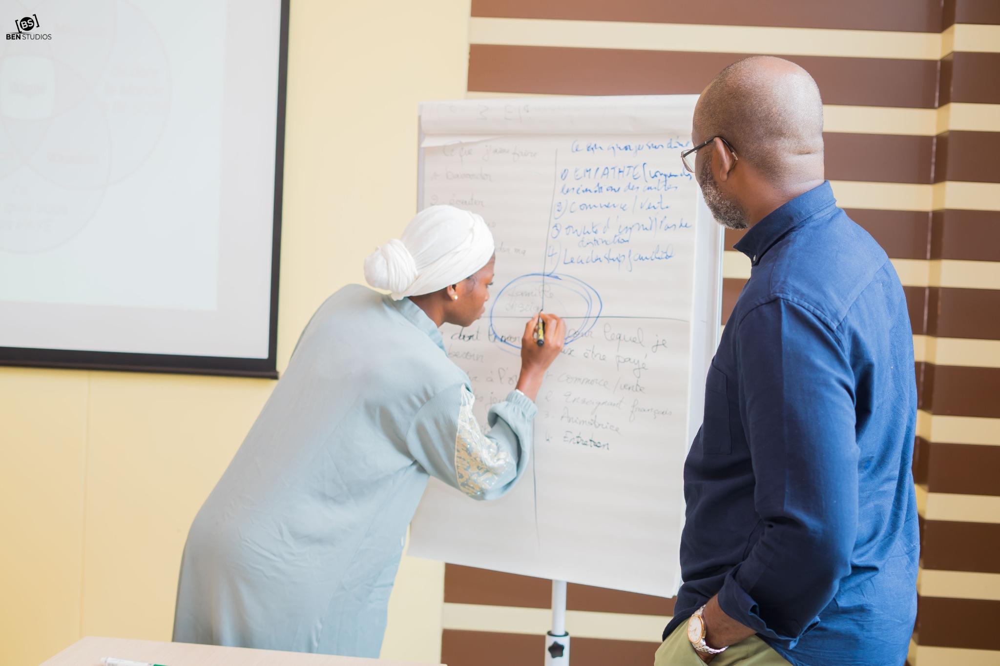

Tu veux évoluer dans ton métier, accéder à davantage de responsabilités ou mieux faire reconnaître ta contribution.
CONVERSATIONS INSPIRANTES
Tu as du potentiel. Fais-en un levier de croissance professionnelle.
Que tu vises une promotion, une reconversion, une insertion professionnelle, le développement d’un projet ou simplement un nouveau cap, Conversations Inspirantes t’aide à clarifier ta direction, mieux faire reconnaître ta valeur et transformer tes ressources en décisions et en actions concrètes.
- Mentorat
- Expérience collective
- Réseau professionnel
- Visibilité
- Passage à l’action

LE POINT DE BASCULE
Ta prochaine évolution ne dépend pas seulement de ce que tu sais faire.
Elle dépend aussi de ta capacité à reconnaître ta valeur, la rendre visible, t’entourer et agir.
TU AVANCES. MAIS VERS QUEL PROCHAIN CAP ?
Évolution & promotion
Reconversion
Insertion professionnelle
Projet & repositionnement
Tu accumules des expériences, des compétences et des responsabilités. Tu sais que tu as quelque chose à apporter.
Pourtant, ton prochain cap professionnel n’est pas toujours aussi clair qu’il pourrait l’être.
Tu veux relier ton expérience, tes talents et tes aspirations pour choisir une direction crédible, cohérente et stimulante.
Tu veux mieux parler de toi, de tes compétences, de ton potentiel et de la valeur que tu peux créer.
Tu as besoin d’un cap, de priorités, de mentorat et d’un réseau qui t’aide à passer de l’intention à l’action.
Et si le prochain plafond n’était pas seulement une question de compétence ? Il peut aussi se trouver dans la difficulté à nommer ta valeur, choisir une direction, dépasser certaines croyances, rendre ton parcours lisible, mobiliser les bonnes relations ou transformer tes intentions en actions régulières.

NOTRE VISION À LA FONDATION HYSTÉRÉSIS
L’expertise et les compétences professionnelles sont nécessaires. Elles ne suffisent pas toujours.
Grandir professionnellement, c’est aussi apprendre à mieux se connaître, reconnaître la valeur de ses expériences, comprendre ce qui nous freine, faire des choix plus conscients, mieux raconter sa contribution et savoir s’entourer pour avancer.
NOTRE CONVICTION
COMPÉTENCES + CLARTÉ + POSTURE + MENTORAT + RÉSEAU + ACTION
= une trajectoire professionnelle plus consciente et plus visible.
Le programme s’inspire des enseignements tirés de parcours professionnels, de transitions, de responsabilités et d’engagements vécus. Une idée revient avec force : les compétences ouvrent des portes ; la clarté, la posture, les mentors, le réseau et la capacité à se mettre en mouvement aident à les franchir.
« Ce programme m’a permis de mieux définir mon identité professionnelle et de clarifier mes objectifs. » — Bénéficiaire, cohorte 2026 • attribution/diffusion à valider
UN AVANT / APRÈS QUI SE VOIT DANS TA TRAJECTOIRE
Ce que tu cherches à construire, concrètement.
Le parcours ne garantit pas un résultat individuel. Il crée un cadre pour t’aider à décider, te positionner et agir avec plus de clarté.
AVANTAPRÈS : CE QUE TU CHERCHES À CONSTRUIRE
Tu avances, mais sans cap professionnel suffisamment clair.
Tu identifies une direction plus lisible et les prochaines étapes à prioriser.
Tu sais que tu as de la valeur, mais tu as du mal à la nommer ou à la défendre.
Tu mets des mots précis sur tes talents, compétences, expériences et singularité.
Tu hésites entre promotion, reconversion, insertion, entrepreneuriat ou repositionnement.
Tu relies tes ambitions à des choix plus cohérents et à une feuille de route concrète.
Ton parcours est riche, mais difficile à raconter.
Tu construis un récit professionnel plus cohérent, crédible et attractif.
Tu hésites à te rendre visible ou à prendre davantage ta place.
Tu renforces ton positionnement, ta marque personnelle et ta capacité à parler de ta contribution.
Tu avances souvent seul face à tes décisions.
Tu t’appuies sur du mentorat, une dynamique collective et un réseau qui élargissent tes perspectives.
CE QUE TU VAS VIVRE
Une expérience qui relie réflexion, relation et action.
Tu ne viens pas accumuler des contenus. Tu avances dans un parcours structuré qui t’aide à comprendre où tu en es, clarifier ce que tu veux, reconnaître ce que tu portes, travailler ce qui te freine et transformer cette compréhension en décisions plus concrètes.
 Un espace d’écoute, de prise de recul et de mise en mouvement.
Un espace d’écoute, de prise de recul et de mise en mouvement.
Faire le point pour mieux décider
Tu prends du recul sur ton parcours, tes attentes et ta situation professionnelle. Tu identifies ce qui doit être consolidé, transformé ou réorienté.
Clarifier ta vision et ton avenir professionnel
Tu travailles la direction que tu veux donner à ta carrière, ta reconversion, ton insertion ou ton projet et tu hiérarchises ce qui compte réellement.
Identifier ce qui freine ta progression
Tu mets en lumière certaines croyances, habitudes ou peurs qui limitent tes décisions : perfectionnisme, peur de l’échec, besoin de validation, difficulté à demander de l’aide ou à prendre ta place.
Relier talents, compétences, aspirations et contribution
Tu reconnais mieux ce que tu sais faire, ce que tu veux apporter et les environnements dans lesquels tu peux créer de la valeur.
Rendre ta valeur professionnelle plus visible
Tu travailles ton identité professionnelle, ta marque personnelle, ta biographie, ton récit de parcours et ta présence dans les réseaux utiles à ta progression.
Transformer la prise de conscience en mouvement
Tu fais le bilan, fixes tes priorités et identifies les actions à engager pour que le programme devienne un point de départ vers la suite.
MENTORAT • EXPÉRIENCE COLLECTIVE • RÉSEAU
Tu n’avances pas seul.
Une trajectoire professionnelle ne se construit pas uniquement avec des outils. Elle se construit aussi grâce aux bonnes conversations, aux regards qui nous déplacent, aux mentors qui nous challengent et aux relations qui ouvrent de nouvelles perspectives.
- Des temps de mentorat et d’accompagnement pour prendre du recul, challenger tes choix et faciliter le passage de l’intention à l’action.
- Une expérience collective où tu peux partager tes avancées, tes questions, tes déclics et tes difficultés sans rester seul face à ton cheminement.
- Des regards croisés qui t’aident à voir dans ton parcours des ressources, des possibilités ou des angles que tu n’aurais peut-être pas identifiés seul.
- Un réseau qui se construit autour de la confiance, du partage d’expérience, de l’entraide et de la volonté commune de progresser professionnellement.

« J’ai été particulièrement frappée par le programme de mentorat […] qui démontre que la Fondation a à cœur l’atteinte des objectifs fixés par chaque bénéficiaire au début du programme. » — Chimène • Lauréate 2025
DES REPÈRES CONCRETS
Tu ne repars pas seulement inspiré(e).
Tu repars avec des éléments que tu peux continuer à mobiliser dans ta trajectoire professionnelle.
Une vision plus claire
De ta trajectoire, de tes priorités et des décisions qui méritent ton attention.
Une cartographie de tes ressources
Talents, compétences, valeurs, expériences et aspirations mieux identifiés.
Un positionnement plus lisible
Une biographie structurée, un récit plus cohérent et des repères pour parler de ta valeur.
Une feuille de route
Des pistes pour ta visibilité, ton réseau et tes prochaines actions professionnelles.
Plus de confiance et de légitimité
Pour parler de tes ambitions, prendre ta place et faire des choix plus conscients.
Un collectif qui soutient
Le sentiment d’être entouré, challengé et soutenu plutôt que d’avancer seul.
Selon ton point de départ, ces acquis peuvent soutenir une promotion, une reconversion, une insertion professionnelle, le développement d’un projet, une prise de responsabilité ou un repositionnement. Le programme ne garantit pas un emploi, une promotion ou un revenu.

QUAND LA TRANSFORMATION DEVIENT CONCRÈTE
Des prises de conscience qui peuvent ouvrir de nouvelles actions.
Les retours de cohorte montrent que certains bénéficiaires ont prolongé le travail de clarification par des actions de visibilité, de candidature et de mobilisation du mentorat.
VISIBILITÉ PROFESSIONNELLE
Renforcer son CV et sa présence professionnelle
Un suivi de cohorte rapporte le renforcement d’un CV et d’un profil LinkedIn, suivi de l’obtention d’un poste dans une ONG et du financement d’un projet après consultation du profil.
PASSAGE À L’ACTION
Candidater avec l’appui d’un mentor
Une bénéficiaire a candidaté à une opportunité avec l’appui d’un mentor et a signé son premier contrat en tant qu’assistante virtuelle.
Ces situations illustrent la logique recherchée ; elles ne constituent pas une promesse de résultat individuel.
C’EST POUR TOI SI…
Tu veux faire évoluer ta trajectoire avec intention.
- tu veux donner une direction plus claire à ton avenir professionnel ;
- tu veux mieux valoriser tes compétences, expériences, talents et singularité ;
- tu envisages une promotion, une reconversion, une insertion, un projet entrepreneurial ou un repositionnement ;
- tu veux mieux parler de toi, de ton parcours et de la valeur que tu peux apporter ;
- tu es prêt(e) à questionner certaines croyances ou habitudes qui freinent ton passage à l’action ;
- tu veux avancer dans un cadre nourri par le mentorat, les échanges et le réseau.
CE N’EST PROBABLEMENT PAS POUR TOI SI…
Tu cherches une solution passive ou un résultat garanti.
- tu recherches uniquement du contenu à consommer sans faire les exercices ni te mettre en mouvement ;
- tu attends une solution instantanée, une promotion, un emploi ou un revenu garanti ;
- tu ne souhaites pas prendre le temps de réfléchir à ton parcours, tes choix et tes priorités ;
- tu recherches uniquement une formation technique ou certifiante sans travail sur ton positionnement et ta trajectoire.

POURQUOI LA FONDATION HYSTÉRÉSIS PORTE CE PROGRAMME
Mieux se comprendre pour mieux décider. Mieux se positionner pour mieux être reconnu. Mieux s’entourer pour mieux avancer.
La Fondation Hystérésis part d’une conviction : le potentiel ne produit pas tout son impact lorsqu’il reste invisible, dispersé, freiné par le doute ou privé d’un environnement qui aide à grandir.
Conversations Inspirantes a été conçu comme un espace pour prendre du recul sur son parcours, structurer sa vision, renforcer sa posture professionnelle, mieux valoriser ce que l’on porte et rencontrer des personnes capables de soutenir une nouvelle étape.
Le programme est nourri par l’expérience de la Fondation et par les enseignements tirés des parcours professionnels et d’engagement de ses dirigeants, sans faire de leur histoire le centre de l’offre.
CHOISIS TON PARCOURS
Deux façons de vivre Conversations Inspirantes.
Un même objectif : faire grandir ton potentiel et accélérer ta progression professionnelle. Deux niveaux d’accompagnement, selon là où tu en es aujourd’hui et la manière dont tu souhaites avancer.
LE PARCOURS DE RÉFÉRENCE
Conversations Inspirantes
Clarifie ta trajectoire. Révèle ta valeur. Construis la prochaine étape de ton avenir professionnel.
GRATUITpour les bénéficiaires sélectionnés
Aucune contribution financière n’est demandée, grâce au soutien des généreux donateurs et sponsors de la Fondation.
Pour toi si…
Tu veux clarifier ta trajectoire, mieux valoriser tes ressources et entrer dans une dynamique structurée de progression professionnelle.
Ce que tu vas vivre
- Parcours structuré avec des contenus en ligne
- 1 session de coaching collectif
- Renforcement en outils numériques et en IA
- Travail sur ta visibilité professionnelle
- 1 à 2 rencontres en présentiel
- Mentorat groupé
- Suivi pendant un an
ACCÈS SUR CANDIDATURE
Les candidatures sont ouvertes uniquement à certaines périodes. Une sélection rigoureuse permet de retenir 50 bénéficiaires par cohorte.
PROCHAINE OUVERTURE15 novembre 2026
ACCOMPAGNEMENT PRIVILÉGIÉ
LE PARCOURS AVANCÉ
Conversations Inspirantes L’Ascension
Va plus loin. Travaille plus profondément sur tes objectifs. Accélère la mise en mouvement de ton potentiel et de ton excellence.
90 000 FCFAContribution aux activités de la Fondation
Pour toi si…
Tu veux aller plus loin dans ton évolution professionnelle, travailler concrètement sur tes objectifs et bénéficier d’un accompagnement à effectif réduit, plus proche et plus personnalisé.
Une expérience plus intensive
- Parcours structuré avec des contenus en ligne
- 4 sessions de coaching collectif
- Renforcement en outils numériques et en IA
- Travail approfondi sur ta visibilité professionnelle
- 3 rencontres en présentiel
- Mentorat individuel
- 2 heures de coaching individuel
- Ressources et contenus complémentaires partagés chaque semaine
- Disponibilité digitale entre les sessions
- Sollicitations individuelles possibles
- Suivi pendant un an
OUVERT À TOUS • SANS PRÉREQUIS
Que tu aies déjà participé à Conversations Inspirantes, à un autre programme de la Fondation ou que ce soit ta première expérience avec nous, tu peux rejoindre L’Ascension.
Ce qui compte, ce n’est pas d’où tu pars, mais ta volonté de t’engager pleinement dans un travail concret sur tes objectifs, tes choix et ta progression.
PROCHAINE COHORTEDémarrage immédiat
Disponibilité à confirmerAucun nombre n’est affiché sans donnée réelle.
EN UN COUP D’ŒIL
Quel parcours correspond à ton besoin aujourd’hui ?
Critère
Conversations Inspirantes
L’Ascension
Objectif
Clarifier et structurer ta progression
Approfondir, personnaliser et accélérer ta progression
Effectif
50 bénéficiaires
10 personnes max.
Coaching collectif
1 session
4 sessions
Mentorat
Groupé
Individuel
Coaching individuel
—
2 heures
Présentiel
1 à 2 rencontres
3 rencontres
Suivi
1 an
1 an
Accès
Candidature + sélection
Immédiat, sans sélection
Contribution
Gratuit
90 000 FCFA
COMMENT REJOINDRE LE PARCOURS QUI TE CORRESPOND ?
Deux chemins simples.
Candidater quand les inscriptions ouvrent
- Prends connaissance de l’ouverture.La Fondation annonce la nouvelle cohorte sur ses réseaux, dans la presse ou par ses canaux de communication.
- Dépose ta candidature sur cette page.Le lien n’est actif que pendant la période annoncée.
- Attends la sélection.Les candidatures sont étudiées et 50 bénéficiaires sont retenus pour la cohorte.
Réserver l’une des 10 places
- Vérifie la disponibilité.Le nombre de places est affiché uniquement lorsqu’une donnée réelle est disponible.
- Inscris-toi et règle la contribution.La contribution demandée aux activités de la Fondation est de 90 000 FCFA. Les éventuels frais de transaction sont affichés avant validation du paiement.
- Ta place est confirmée.Une place n’est décomptée qu’après confirmation réelle du paiement. Les inscriptions ferment automatiquement lorsque les 10 places sont prises.
QUESTIONS FRÉQUENTES
Ce qu’il faut savoir avant de choisir.
Les réponses ci-dessous présentent les modalités actuellement prévues. Les détails opérationnels finaux seront affichés au moment de l’ouverture.
Dois-je déjà avoir un projet professionnel parfaitement défini ?
Non. Tu peux justement rejoindre le parcours pour clarifier une direction, arbitrer entre plusieurs possibilités ou mieux comprendre la prochaine étape qui te correspond.
Le programme s’adresse-t-il uniquement aux personnes en reconversion ?
Non. Il peut répondre à des besoins d’évolution ou de promotion, d’insertion professionnelle, de reconversion, de projet entrepreneurial, de repositionnement, de visibilité ou de recherche d’un cap plus cohérent.
Est-ce du développement personnel ?
Non, plutôt un recentrage et un réalignement. Le programme part de la connaissance de soi pour aller vers des décisions, un positionnement, une visibilité, un réseau et des actions professionnelles concrètes.
Y a-t-il une contribution financière pour Conversations Inspirantes ?
Non. Le parcours est accessible sans contribution financière pour les bénéficiaires retenus, grâce au soutien des donateurs et sponsors. L’accès se fait sur candidature et sélection de 50 personnes par cohorte.
Quelle différence avec Conversations Inspirantes — L’Ascension ?
L’Ascension est le parcours avancé : groupe limité à 10 personnes, 4 sessions de coaching collectif, mentorat individuel, 2 heures de coaching individuel, 3 rencontres en présentiel, ressources complémentaires hebdomadaires et disponibilité digitale entre les sessions.
Pourquoi choisir L’Ascension alors que je peux candidater à Conversations Inspirantes ?
Parce que les deux expériences ne répondent pas au même niveau d’accompagnement. Conversations Inspirantes propose un cadre structuré accessible sur sélection. L’Ascension est ouverte sans sélection, en effectif réduit, avec davantage de coaching, de personnalisation et de disponibilité pour travailler plus finement tes objectifs.
Faut-il avoir déjà suivi Conversations Inspirantes pour rejoindre L’Ascension ?
Non. L’Ascension est ouverte aux personnes ayant déjà participé à un programme de la Fondation comme à celles qui découvrent la Fondation pour la première fois.
Comment le nombre de places de L’Ascension est-il calculé ?
Le site n’affiche un nombre que s’il provient d’une valeur administrée ou d’une source technique réelle. En production, une place devra être décomptée uniquement après confirmation effective de l’inscription et du paiement.
Quels moyens de paiement seront acceptés ?
La solution de paiement retenue sera indiquée avant l’ouverture de l’inscription. Les éventuels frais de transaction seront clairement présentés avant validation du paiement.
TON PROCHAIN CHAPITRE PROFESSIONNEL
Tu peux commencer ici.
Tu n’as pas besoin d’avoir toutes les réponses. Choisis maintenant la voie qui correspond à ton niveau d’engagement et à la manière dont tu veux avancer.
DONATEURS & SPONSORS
Rendre Conversations Inspirantes accessible à davantage de talents.
Le parcours Conversations Inspirantes est proposé sans contribution financière aux bénéficiaires sélectionnés grâce au soutien de donateurs et de sponsors. Soutenir le programme, c’est contribuer à maintenir cette accessibilité, renforcer l’accompagnement et prolonger l’impact professionnel du parcours.
Donner à de nouveaux talents les moyens d’avancer.
Une contribution financière peut soutenir l’accès aux cohortes, les ressources pédagogiques, le mentorat, le suivi des bénéficiaires, les outils numériques et la continuité du programme.
Je souhaite faire un donAssocier ton institution à un programme d’impact.
Le partenariat peut être financier, en nature ou stratégique : équipements, prestations, communication, mentorat, opportunités professionnelles, réseautage, expertise ou mise en relation.
Je souhaite proposer un partenariatDEVENIR PARTENAIRE D’IMPACT
Associer son institution à Conversations Inspirantes, c’est soutenir une démarche de développement des talents, de croissance professionnelle, de mentorat, de réseau et de passage à l’action.